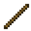

Ondergronds: cellen met magere guhs, Mika-larfjes en het portaal naar het Guheinde
The KnabbelkelderDe Knabbelkelder
A cellar of cheese-crust bricks under the Guhmension, partly gnawed away by the Mikas. Mika-larfjes (tiny Mikas, the silverfish of the guhs) live in the bitten bricks and steal your knabbels. In the cells sit grey, starving guhs: give one a kaasknabbel and VAHOEG, it gets its colour back and runs home (save six for an advancement). There is a library with the new lore book, a Mika feast hall, a looted pantry and the open portal room with the twelve frames above a pool of kaassaus.
Een kelder van kaaskorststenen onder de Guhmensie, deels weggeknaagd door de Mika's. In de aangevreten stenen wonen Mika-larfjes (piepkleine Mika's, de zilvervisjes van de guhs) die je knabbels inpikken. In de cellen zitten grauwe, magere guhs: geef er een een kaasknabbel en VAHOEG, hij krijgt zijn kleur terug en rent naar huis (red er zes voor een vooruitgang). Er is een bibliotheek met het nieuwe lore-boek, een Mika-feestzaal, een leeggeroofde voorraadkamer en de open portaalkamer met de twaalf frames boven een poel kaassaus.
LootBuit
| ItemVoorwerp | CountAantal | ChanceKans |
|---|---|---|
| Written book | 1 | oftenvaak |
| 1–6 | oftenvaak | |
| Bot | 1–2 | oftenvaak |
| 1–3 | oftenvaak | |
 Stok | 1–3 | oftenvaak |
| 1–5 | sometimessoms | |
| 1–3 | sometimessoms | |
| Brood | 1–3 | sometimessoms |
| 1–2 | sometimessoms | |
| 1 | rarelyzelden | |
| Iron sword | 1 | rarelyzelden |
| Iron chestplate | 1 | rarelyzelden |
| 2–7 | oftenvaak | |
| 1–3 | oftenvaak | |
| 1–4 | oftenvaak | |
| 1–2 | sometimessoms |